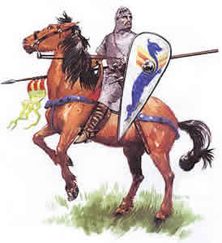

Forums galactiques > Assemblée Galactique : diplomatie officielle > CharleMagne
Pages : 1 2
| CharleMagne Respect diplomatique : 137  16/09 ETU 23:35  | Score : 0 Détails Un homme en costume fit son entré dans l'Assemblé, il avait sur la peau une chemise et des haut-de-chausses de toile de lin; par-dessus était une tunique serrée avec une ceinture de soie; des bandelettes entouraient ses jambes et des sandales renfermaient ses pieds.
Il portait une épée dont la poignée et le baudrier étaient d'or. Comme à célébrer une grande solennité, il se montrait avec un justaucorps brodé d'or et un diadème tout brillant d'or et de pierreries. Il était gros, robuste et d'une taille élevée, mais bien proportionné. Il avait le sommet de la tête rond, les yeux grands et vifs, le nez un peu long, les cheveux beaux, la physionomie ouverte et gaie. Il prit la parole : « AU NOM DE DIEU TOUT-PUISSANT, LE PERE, LE FILS ET LE SAINT-ESPRIT, QUI GARANTIS A NOUS TOUS NOTRE EXISTENCE INTERGALACTIQUE ». Sa posture debout et toute sa personne commandaient le respect et respiraient la dignité. L'Assemblée fut fort étonnée, il marchait d'un pas ferme; tous les mouvements de son corps présentaient quelque chose de mâle. Et aussitôt il continua : « J'ai voulu prendre ici le nom du roi Charles, le plus excellent et le plus justement fameux des princes plutôt que de laisser perdre dans les ténèbres de l'oubli la glorieuse mémoire d'un roi vraiment grand et des actes éminents que pourraient à peine imiter les hommes des temps modernes. Comment l'ont fait vers Charles Magne les historiens, j'espère vous pourriez apprécier en moi l'audace d'un barbare peu exercé à la langue française et qui crois pouvoir écrire d'un style correct et facile. Cicéron a dit: «Confier à l'écriture ses pensées sans être en état de les bien disposer ni de les embellir et d'y répandre un charme qui attire le lecteur, est d'un homme qui abuse à l'excès et de son loisir et des lettres.» Néanmoins je vous demande la patience nécessaire à m'écouter et à comprendre mes intentions. JE VIENS DANS CETTE NOBLE ASSEMBLE PRECHER LA PAIX, LE BIEN ETRE DE NOS PEUPLES, LE DEVELOPPEMENT DURABLE, LE RESPECT DE LA VIE. Je sollicite votre mouvement d'alliance et d'amitié envers ma personne et mon peuple. N'ayez pas crante du nom que je porte. La crainte des Grecques et des Romains qui a généré le proverbe qui longtemps eut cours: « Ayez le Franc pour ami et non par voisin » ne doit pas effrayer le justes. Ce proverbe n'a pas de raison d'être en ce lieu. CETTE NOBLE ASSEMBLE DOIT DESORMAIS ETRE L?ASSEMBLE DES JUSTES, LES FELONS ET LES VAUTOURS N'Y DEVRONT PLUS ETRE ADMIS. Excusez moi la digression mais j'en voie déjà quelques uns assis sur les bancs, ce n'est pas vrai Commandants Napoléon et Mère Denis que vous agressez des populations pacifiques? Ou encore le Commandant Ta Brioche qui vante des droits sur un noble peuple qu'il voudrait réduire en esclavage et qui s'est justement révolté? Mais nous débattrons de cela dans une prochaine session. Quoique, je disait, je sois engagé à agrandir mes «États », et à soumettre à mes lois les nations étrangères, et quoique tout entier occupé à l'exécution de ce vaste projet, je ne me lasserai pas de commencer et même de terminer les travaux pour le bien être et la commodité de mon peuple et de mes alliés. SURTOUT J'APPLIQUERAIS MES SOINS A RECONSTRUIRE, DANS TOUTE L'ETENDUE DE L'UNIVERS, LES ECOLES POUR REPANDRE QUELQUES LUEURS AU MILIEU DES TENEBRES DE CE TEMPS, ET LES LIEUX DE CULTE TOMBES EN RUINES AFIN QUE LA RECONNAISSANCE DE NOS PEUPLES PUISSE LARGEMENT MAGNIFIER LA PUISSANCE ET LA BIENVEILLANCE DE DIEU 1/3+1/3+1/3. Ma vocation est de concilier l'amour et la bienveillance de tous dans toutes les galaxies, que nul ne put jamais me reprocher le plus petit acte d'une injuste rigueur. J'aime les faibles, les pieux et les étrangers et je mettrais tous mes soins à bien les accueillir. Je n'urais pas peur qu'ils accourrent en grand nombre car ils ne seront jamais une charge trop dispendieuse pour mon royaume mais une richesse. L'élévation de mon âme me fait regarder ce fardeau comme léger. JE SOUTIENDRAIS LES PAUVRES ET JE SERAIS PRODIGUE DE DONS ENVERS EUX. PARTOUT DANS L'UNIVERS JE COMPATIRAIS A LA DETRESSE DES JUSTES ET DES CROYANTS. Je rechercherais l'amitié des princes pour procurer secours et soulagement aux miséreux qui vivent sous leur domination. Commandantes, Comandants, bientôt JE VIENDRAIS TAPER A VOTRE PORTE, JE REGARDERAIS DANS VOS C?URS, JE COMPRENDRAIS ALORS VOS SENTIMENTS, JE DEMANDERAIS AUX JUSTES D'ETRE MES ALLIES POUR REALISER CE PROJET, POUR LE SALUT DE L?UNIVERS. Ensuite il tourna vers ceux de gauche un front irrité qui troubla leurs consciences; il leur lança avec ironie cette terrible apostrophe: «Les autres, même si nobles, fils de grands, fiers de leur naissance et de leurs richesses, ceux qui auront négligé la gloire passée de leur nom, ceux qui se seront livrés à la mollesse, au jeu, et à la paresse ou à l'ivrognerie, si tout ces gens ne répareront pas par un zèle vigilant leur négligence, ils n'obtiendront jamais rien de moi.» | ||
| l\'abbé ramouflon Respect diplomatique : 579  17/09 ETU 00:37 | Score : 0 Détails Une telle pieté me rechauffe le coeur cher empereur !!! nous pourrions nous entendre tous les deux
| ||
| OverLorD Respect diplomatique : 0  17/09 ETU 08:19 | Score : 0 Détails *Le commandant OverLorD resta perplexe au grand discours de Charlemagne , comme d'accoutumé , car ils lui rappellent de mauvais souvenirs...*
| ||
| AlphonseHubert Respect diplomatique : 690  17/09 ETU 09:11 | Score : 0 Détails "Commandant, ou 'prince', comme il vous plait de vous nommer. De votre discours, je ne dirai rien, ne voulant point vous assaillir de toutes les critiques pourtant justifiées que je pourrai y apporter. D'ailleurs, le simple fait qu'il plaise à cet obscurantiste de Ramouflon devrait permettre de déduire ce que j'en pense.
Néanmoins, il est un point où je vous rejoins, pleinement et entièrement. Il manque dans la Galaxie des Ecoles, ces temples du savoir où les hussards noirs de la République gratteraient patiemment et méthodiquement les couches millénaires de préjugés obscurcissant la vue des Hommes. Il manque à la Galaxie un grand mouvement d'éducation populaire, comme aurait dit mon ami Léo Lagrange, afin que tous, même les classes laborieuses, puisse enfin jouïr des progrès de la Science et de l'Esprit. Loin seulement de lutter contre l'illéttrisme, cette initiative permettra d'ouvrir à tout un chacun la possibilité de participer à la découverte de la Vérité, d'oeuvrer pour dégager le sens de l'Histoire. Pour rendre le monde plus savant, mais aussi pour le rendre meilleur : Victor Hugo ne disait-il pas 'quand vous ouvrez une école, vous fermez une prison' ? J'ose conjecturer que le niveau des débats à l'Assemblée Galactique devrait, lui aussi, en bénéficier. Cependant, et c'est là en quoi votre intervention me surprend, tout roi que vous vous proclamez, n'oubliez pas que le savoir est une arme. Prenez garde à ce qu'elle ne se retourne pas contre vous." AlphonseHubert se rassit, tout fier de son intervention qui, décidément, n'aura pas fait avancer le Schmilblick. | ||
| Eghinard Respect diplomatique : 111  17/09 ETU 22:15 | Score : 0 Détails
Commandants, Certes, nombreux sont ceux, je n'en doute pas, parmi les amateurs de culture et de littérature, qui dans cette asseblée ne jugent pas les événements du temps présent à ce point négligeables que tout, absolument tout, ce qui se passe aujourd'hui soit condamné au silence et à l'oubli comme n'étant pas digne de mémoire ; au contraire, poussés par le désir d'immortalité, ils préfèreraient inscrire dans des écrits d'un genre ou d'un autre les actions illustres d'autres hommes plutôt que de priver la mémoire de la postérité du souvenir de leur propre nom en n'écrivant rien. Mais je n'ai pas cru devoir me détourner d'un ouvrage de ce genre, dans la mesure où je sais pertinemment que personne ne peut écrire avec plus de véracité que moi des choses auxquelles j'ai participé et qui sont à venir, que je connais avec certitude pour les avoir vues se dérouler sous mes yeux, comme on dit, et dans la mesure où je ne peux pas savoir vraiment si quelqu'un d'autre les mettra par écrit. J'ai cru d'ailleurs qu'il valait mieux courir le risque de transmettre, quoique, pour ainsi dire, de société avec d'autres auteurs, les mêmes choses à nos neveux, que de laisser perdre dans les ténèbres de l'oubli la glorieuse mémoire, d'un roi vraiment grand et supérieur à tous les princes de son siècle, comme l'a affirmé l'Empereur lui-meme dans son discours. Voici cependant, commandants, que commence l'histoire de l'homme le plus grand et le plus célèbre et que j'ai entrepris de vous compter ; dans mes paroles, à l'exception de ses actions vous n'y trouverez rien que vous ne puissiez admirer, si ce n'est peut-être mon audace de barbare qui s'est laissé entraîner à un tel orgueil que de ne tenir aucun compte de ce que Cicéron a dit dans le premier livre des Tusculanes, en parlant des écrivains latins. Certes, cette sentence, citée par l'Empereur en personne dans son discours, émanant d'un si parfait orateur aurait eu le pouvoir de me détourner d'écrire, si je n'eusse été fermement résolu de m'exposer à la critique des hommes et de donner, en composant, une mince opinion de mon talent, plutôt que de laisser, par ménagement pour mon amour-propre, périr la mémoire d'un si grand homme. Ayant résolu d'écrire sur la vie, les m?urs et les principaux faits du règne du seigneur qui m'a nourri, le très excellent roi Charles, si justement fameux, je le fais avec le plus de sobriété que je peux, m'attachant tout ensemble à ne rien omettre de ce qui est parvenu à ma connaissance et à ne pas fatiguer par la longueur de mon récit. Je me presente ainsi donc, moi, Eghinard, secrétaire personnel du grand roi Charles, Renovatio Romani Imperi, fils du modèle eusebien, Saint Romain Empereur d'occident, seul grand empire. Toute correspondence adressée à l'Empereur devra d'abord me parvenir. Je traiterai personellement ses affaires courantes et fixerai ses audiences. Je servirai aussi de référent commercial dans nos echanges avec les peuples barbares, les alliés, et les Etats de sa sainteté le Pape. Locutusque est Dominus ad Mosen dicens ecce vocavi ex nomine Beselehel filium Uri filii Hur de tribu Iuda et implevi eum spiritu Dei sapientia intellegentia et scientia in omni opere. In fede, Eghinard. | ||
| Necrid Respect diplomatique : 26  17/09 ETU 22:36 | Score : 0 Détails Puis-je vous parler par MP, Commandant ? Vous m'intriguez quelque peu. Voir les noms d'Eginhard, de Charlemagne et d'Eusèbe de Césarée mentionnés devant l'Assemblée a quelque chose de très troublant pour le médiéviste que je fus il n'y a pas si longtemps.
| ||
| CharleMagne Respect diplomatique : 137 18/09 ETU 02:54 | Score : 0 Détails CharleMagne reprit la parole,
« AU NOM DE DIEU TOUT-PUISSANT, LE PERE, LE FILS ET LE SAINT-ESPRIT, 1/3+1/3+1/3, QUI GARANTIS A NOUS TOUS NOTRE EXISTENCE INTERGALACTIQUE ». Je remercie la bienveillance de Notre Seigneur, qui a voulu associer à mon nom la lumière de deux étoiles, et l'attentions de tant d'illustres Commandants au propos que je viens d?énoncer, ainsi que l'absence d'argumentations puériles ou mal énoncées qui trop souvent ne permettent pas, même dans ce lieu sacré de développer la dialectique et de faire avancer la foi. Commandant OverLord, je ne comprends pas votre perplexité, les moyens intellectuels d'une meilleure argumentation vous feraient-ils défaut ? Monsieur l'Abbé, l'extrême malveillance qui surgie de ces nobles contre vous est-elle motivé ? Combien avez vous péché ? Votre vie monastique est aujourd'hui le chemin de l'expiation ? Est-elle la voie vers une nouvelle vie ? « Errare humanum est, persévérare diabolicus est. » Mon regard est fondé sur les actes nobles ou pervers que chaque homme accomplis mais le jugement revient à Dieu seul et à sa Sainteté le pape Léon qui agit en son nom. Je remercie le Commandant AlphonseHubert ou érudit ou Homme de Sciences, comme il lui plait d'être nommé, car il en possède les pré-requis, mais comme je l'ai dit, l'élévation de mon âme me fait regarder les critiques, pas encore exprimées jusqu'à ici, comme un fardeau très léger à supporter si la fin en est le salut de l'Homme. Cher AlphonseHubert, permettez-moi de me considérer votre égal, barbare que je suis et de m'adresser à vous comme à mon frère, je me félicite de notre point de vue commun sur l'urgence de fonder des écoles. Après l?Apocalypse, nous avons le devoir d?éveiller les consciences des rois fainéants, de combattre l'ignorance. Seulement ainsi nous construirons un univers pacifié, nous préviendrons les pestilences, les cataclysmes naturels et la famine. N'ayez pas craint que l'arme du savoir puisse se révolter contre vous, soyez à mon coté, toujours au premier rang, l'épée à la main et le bras levé vers le ciel à la tête de ces hommes qui devenus invincibles par la force de leur savoir ouvriront le porte d'une ère nouvelle. Or ce que je veux sont : 1 Les lieux du savoir organisés en s'appuyant sur un réseau de communications intergalactiques. 2 Les « artisans du savoir » capables de lire les « Saintes Ecritures » même si fuissent écrites avant l'Apocalypse. 3 Une base linguistique et culturelle commune la plus large possible. Commandants, je ne tiendrais ultérieurement la parole, car bien que sobre dans le boire et le manger, je sente que l'heure du repas est du repos est proche. Touts Commandants qui veuillent correspondre avec moi, ainsi que le Commandant Necrid l'a manifesté, peuvent le faire directement (MP), mais mon faible accoutumance à l'écriture mieux conseille qu'ils s'adressent à mon fidèle conseiller Eghinard que j'ai délégué à traiter mes affaires courantes et à fixer mes audiences. Après cela, levant vers le ciel sa tête auguste il conclut : « QUE DIEUX TOUT PUISSANT PUISSE TOUJOURS ILLUMINER AVEC LA LUMIERE DE SES ETOILES NOTRE CHEMIN. » | ||
| Le Pape Respect diplomatique : 23  21/09 ETU 17:45 | Score : 0 Détails Aux Patriarches, Primats, Archevêques, Evêques et croyants du monde catholique en grâce et communion avec le Siège apostolique.
Nuntio vobis gaudium magnum : C'est avec grande joie et espoir que je bénis l'accession à la diplomatie de son éminentissime majesté Charles roi des Francs. In Fide Sanctae Romanae Ecclesiae, Leone III Pontifex Maximus | ||
| Eghinard Respect diplomatique : 111 22/09 ETU 02:30 | Score : 0 Détails
Gloire à sa sainteté Leon III | ||
| Necrid Respect diplomatique : 26 22/09 ETU 03:00 | Score : 0 Détails Evitez vos autocongratulations au sein de l'Assemblée Galactique.
| ||
| Roland Respect diplomatique : 4  08/10 ETU 15:42 | Score : 0 Détails Voilà je me presente ici pour jurer fidélité étérnelle au seul vrai Empereur CharleMagne et à Sa Sainteté le Pape Leon III de la "Sacra Romana Eclesiae".
sire Roland | ||
| Devan Respect diplomatique : 93  08/10 ETU 15:57 | Score : 0 Détails (air attéré)
Vraiment, je me réjouis de voir tant d'hommes de lettres et de noble sang se presser autour de la tribune, mais dans le fatras de vos logorrhées, y'a-t-il seulement une phrase qui soit d'une quelconque utilité pour la commauté intergalactique? Si vous prenez la parole uniquement pour vous entendre discourir, vous pouvez aussi bien le faire à la taverne, une pléiade d'alcooliques et de désoeuvrés seront ravis de comparer leur vacuité avec la votre. Maintenant allez agitez vos armoiries dehors, nous avons du travail. | ||
| Seigneur vador Respect diplomatique : 442  08/10 ETU 15:58 | Score : 0 Détails Bien envoyé!!!!!!!!
| ||
| Kela Respect diplomatique : 125  08/10 ETU 17:00 | Score : 0 Détails Je suis Charlemagne et Alphonse Hubert dans la nécessité d'éduquer le peuple.
Je suis par exemple attérée que nous ne puissions financer uniquement la recherche civile et militaire et qu'ils n'existent aucun laboratoire de recherche historique, littéraire, philosophique, sociologique. C'est pourquoi j'ai crée une école galactique dans le système 0 au point 5, système chargé d'histoire donc il me semble approprié pour apprendre. Que tous ceux qui veulent apprendre ou qui ont des choses à transmettre viennent y faire un tour. Pour la connaissance, l'éducation et l'échange, Kela | ||
| Eghinard Respect diplomatique : 111 08/10 ETU 20:50 | Score : 0 Détails
C'est avec joie et orgeuil que je vous souhaite la bienvenue dans la galaxie à Roland trop longtemps egaré. Si les lances du peuples franc etaient deja funestes, l'epee de Roland les rendra invincibles. Quant a vous Devan, je pense qu'une lecture attentive des comptes rendus des dicours programmatiques de sa majesté le tres fameux roi Charles donnera reponse à vos questions. In fede, Eghinard, secretaire et conseiller du renovatio romano imperii. | ||
| Eghinard Respect diplomatique : 111 09/10 ETU 00:07 | Score : 0 Détails
Dame Kela, L'Empereur me prie de vous faire la communication suivante : " Votre noblesse d'esprit, votre légerté souriante et la droiture de vos engagements feront de nous, toujours, vos eternels abbonés " | ||
| AlphonseHubert Respect diplomatique : 690 09/10 ETU 00:28 | Score : 0 Détails Dame Kela,
je vous félicite de cette initiative, plus heureuse que celle des restaurants chauxdouxdoux. J'envoie immédiatement une délégation dans votre école. J'espère avoir l'occasion de la visiter en personne très rapidement. Très cordialement, AlphonseHubert | ||
| CharleMagne Respect diplomatique : 137 22/10 ETU 08:54 | Score : 0 Détails Des bruits courraient dans les couloirs de l'Assemblé au sujet de l'identité de cet homme dont l'affirmation physique et le regard magnétique semblaient supérieurs à ses réelles possibilités militaires.
Il reprit alors la parole : Je suis Charles, petit-fils de Charles Martel, fils de Pépin III et de la reine Bertrade, roi des Francs et des Lombards. J ai succédé à mon frère aîné Carloman mort à 20 ans. Roland est mon neveu, le fils de ma s?ur, le plus vaillant de mes princes. Eghinard est mon plus fidèle conseiller ecclésiastique et ses paroles sont digne d écoute. Leur présence dans cette noble assemblé est un acte dus. Nous sommes tous ici réunis pour illustrer mon programme, pour le salut de la galaxie. Ceux qui, parmi vous, n'ont pas d'intérêt à m'écouter n'ont qu'à regagner leur terres et à cultiver leurs choux. J'ai déjà parlé des écoles que je vais fonder, la première est ouverte, afin d'apporter un renouveau intellectuel et religieux au vaste monde. Je vais donc commander des rédactions nouvelles pour corriger les textes des erreurs accumulées de copies en copies. Pour cela j'ai appelé de tous les coins de la galaxie les meilleurs maîtres, l'Anglo-saxon Alcuin, le Lombard Paul Diacre et le Goth espagnol Théodulfe. Le Comandant AlphonseHubert, ne déparera pas parmi ces magisters et je l'espère, il voudra bien donner sa contribution à cet élan vers la culture. Je vous rappelle que, moi-même, je ne sais que trop mal écrire Dans d'autres sessions de cet Assemblé j'ai disputé « Empire » car ce titre m'a été attribué. A ce sujet je marque des hésitations, qui peuvent s'expliquer par l existence de plusieurs conceptions de l'empire. Cependant, les Commandants incarnant cette idée étant bien trop nombreux, je les exclue volontairement, cette conception étant externe à leur nature. Notre fin est la constitution d'un ordre sociale qui puisse en arrêter avec la barbarie et permettre le développent de la culture dans une galaxie pacifiée. Nos ennemis sont les barbares ces qui essayent de s'emparer de nos terres, qui viennent à violé nos femmes et nos enfant. Nous ne nous attaquons a personne. Nous courrons au secours des peuples qui se révoltent pour les protéger de la tyrannie e pour le convertire à la vrai fois. Enfin mon idée de fait « Empereur est celui qui conditionne plusieurs royaumes », et alors le titre impérial se réduit à une simple dignité, qui n'apporte aucun surcroît de puissance à celui qui le porte. Mon idée renouvelle la grandeur romaine, qui fait de l'empereur le souverain suprême du monde civilisé. Ainsi, sur mon sceptre j'ai fait inscrire Renovatio romano imperii et à Aix une cathédrale s'érigera, écho des dômes de Constantinople. Une idée religieuse, selon laquelle l'empereur est le chef temporel, souverain d'un empire chrétien, dont le dirigeant spirituel est le pape, notre Sainteté Leone III. Qui pense que ces sujets soient inutiles pour l'assemblé intergalactique et se permettent de nous comparer aux multitudes d alcooliques qui fréquentent les tavernes, lieux desquelles nous nous sommes tenus toujours à l'écart, comme les gamins qui s amusent à tirer sur tout ce qui bouge, et bien je le soupçonne d'un profond vide moral et intellectuel. Sur ces mots, si rarement prononcés par un homme proche de la Sainteté, le roi Charles demanda tout bas à Eghinard de rester à l'écoute des opinions de l'Assemble et dans l'espoir que l'intelligence puisse finalement se manifester, il sortit de l'assemblée. Avant de franchir le seuil cependant il se retourna une dernière fois. Ses longs cheveux ondulèrent sur sa cape verte couleur de mousse. Il regarda lentement l assemblée et droit, géant de deux mètres, il lanca ces mots d'espoir : UN GRAND EMPIRE CHRETIEN, UNE GALAXIE PACIFIE QUE DIEU NOUS SAUVE. | ||
| etic Respect diplomatique : 307  22/10 ETU 09:03 | Score : 0 Détails Ah..... et moi qui est oublie ma mandoline, c'est balo car j'aurais pu en faire une comptine....
| ||
| Seigneur vador Respect diplomatique : 442 22/10 ETU 09:24 | Score : 0 Détails Ahaha...a-t-on jamais vu un empire qui faisait la paix(a part l'EDG qui est dissout),seul un empire guerrier peut perdurer,mais si il est guerrier il se fait attaquer,si il est pacifiste il ne fait rien...
Alors comment faire???? En recreant l'Empire des chevaliers de la forces... |
Pages : 1 2
Forums galactiques > Assemblée Galactique : diplomatie officielle > CharleMagne